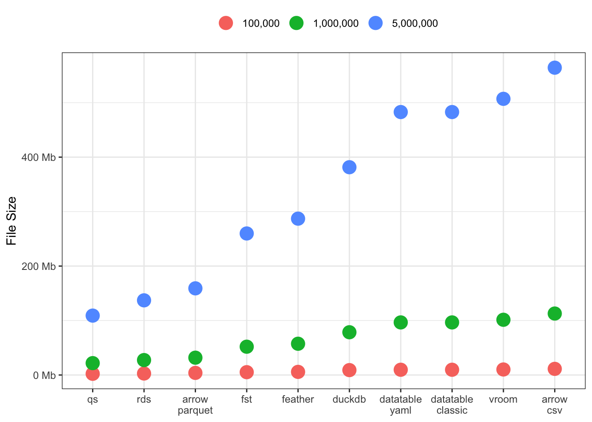
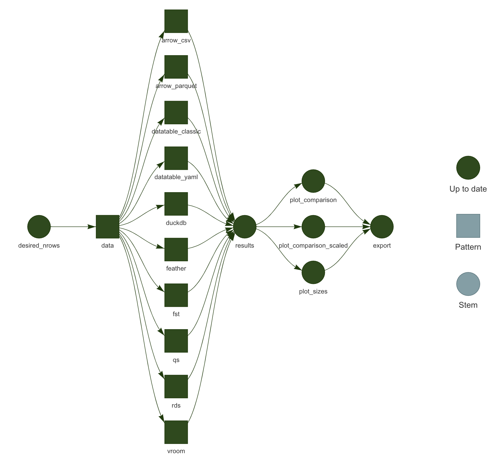
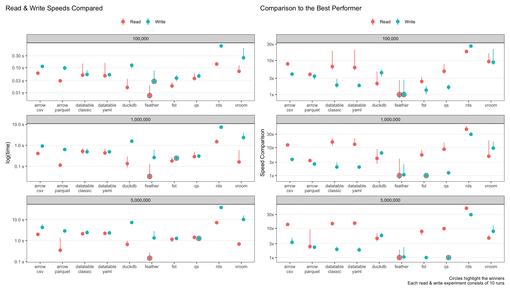

Performance Benchmarking Data Read Write
Benchmarking
Which of the popular data read write methods is faster? Let’s find out.
Background
In a recent conversation, I was asked how to speed up execution of scripts dealing with computation on big data sets (biggish i.e. in-memory). The scripts had some data read and write features with some ETL sandwiched in between. Upon reviewing the code base, I found some immediate improvements by moving a bunch of ETL code from {dplyr} to {data.table}, which has been my defacto go to for large data sets.
On the data read/write side of the equation, I used to be an ardent {qs} user with intermittent forays into {data.table::fread/fwrite} functions. However, recently, I’ve switched majority of my work to {arrow} which has proven itself a strong ally in the war against slow data transaction times.
The question remains - which one works better? Particularly, which one works better on the machines I’m using as well as the server I have access to? My configuration has changed from my last performance review posting. I’m now running:
- MacBook Pro, running MacOS 12.5
- 2.4 GHz 8-Core Intel Core i9
- 64 GB 2667 MHz DDR4
- R version 4.2.0 on x86_64-apple-darwin17.0 (64-bit)
Execution
At a high level, the method is quite simple.
- Create fake large data sets
- For each, measure read and write speed for all approaches
- Plot and compare
The devil is in the details though, especially concerning scaling this approach. While my first approaches were linear script based, this quickly uncovered the ineffectiveness of scripts - the lack of ability to cache & reference previous results (at least without significant coding). I quickly pivoted to using {targets} to build this measurement pipeline, learning ‘dynamic branching’ along the way, and I must say - I’m glad I did so.
In case you’re not familiar, {targets} is a “…Make-like pipeline tool for Statistics and data science … [to] maintain a reproducible workflows…” Learn more here.
Not only is the pipeline much easier to grok, but is extremely scalable. Since {targets} caches previous runs, I can very rapidly experiment with data, modeling & plotting combinations while maintaining end-to-end verifiable reproducibility, without wasting any time re-executing long-running experiments.
I won’t delve into how I created this pipeline in this post, but the code base is available here.
Data
| cat_A | cat_B | date | num_1 | num_2 | num_3 | num_4 | chr_1 | chr_2 | chr_3 | chr_4 |
|---|---|---|---|---|---|---|---|---|---|---|
| Alabama | B | 2023-03-01 | 0.67 | 0.13 | 0.83 | 0.04 | h | p | i | u |
| Alabama | B | 2022-10-18 | 0.52 | 0.63 | 0.29 | 0.14 | s | o | h | a |
| Alaska | A | 2023-03-20 | 0.42 | 0.24 | 0.45 | 0.21 | n | g | l | n |
| Arkansas | B | 2023-08-07 | 0.60 | 0.12 | 0.46 | 1.00 | c | p | r | b |
I created some fake data with categoricals, numerics and date-time vars. I’ve used ‘long’ data here, since it represented the use case I typically have, although I wonder if the results would change if the data were wider. After a few iterations, I settled on number of rows: 100k, 1M, and 5M. The results for number of rows = 1M+ did not change, to be honest.
Approaches
I tested the packages I tend to use the most, along with a new one vroom and the traditional RDS format from R. All in all, I tested:
data.table- both the traditional CSV, andyaml = TRUEformulationsarrow- two configurations:parquetandarrow_csvqsvroomRDSfeatherfstduckdb
Each approach is shown by a green square in the middle here. Each square represents a read and write using {microbenchmark} to measure the execution times. In total, this pipeline runs {10 read/write approaches x 3 data sets x 10 repeats} for a total of 300 runs.

Results
So what do the results look like? To be honest, they quite agree with what I had experienced in my work with large data sets.
Speeds
The plots below show the absolute read & write speeds on the left (measured in seconds), with relative speed decrease as compared to the best performer on the right.
Let’s just look at the largest data size of 5 million rows.
tldr
updated!
feather(as opposed toarrow-parquet) is now the clear winner for read speeds! The next best isarrow-parquetat 2.5x slower.featheris simply blazing! At sub-second read speeds, I had to confirm something wasn’t going wrong in the code-base!qs,fstandfeatherall perform admirably for write-speeds.arrowanddata.tableare the next best at 2-3x slower speeds thanqs.For
data.table, theyaml = TRUEsetting doesn’t make any difference to read-speeds. This one surprised me, since I thought it would speed it up at least a bit.rdsis the slowest, unsurprisingly, at 20-30x slower thanarrow.duckdbandvroomperformance were the middle of the pack.

File Sizes
This one is a doozey! Significant differences across all the packages, especially for large 5M row data sets. There seem to be three groupings: [qs, rds and arrow-parquet], [fst, feather & duckdb], and finally [datatable, vroom and arrow-csv].
I’m curious to see if this result varies for wider data sets, or data sets with more/less characters and numerics.
Takeaway
For the foreseeable future, I’m still indexing very heavily to arrow for my structured data sets, despite feather being faster (for some other reasons). It’s fast read and write times, combined with ability for lazy execution of queries on partitioned data makes it a clear winner for large data for my use cases.